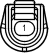

Наименование
Контактный датчик давления масла рулевого управления с усилителем
Код
C57
Каталожный номер
90980-11428
Цвет
Черный
Технические характеристики
Жгуты проводов для ремонта

Расположение
Расположение деталей в моторном отсеке (для моделей с левосторонним рулевым управлением и 1KD-FTV) 3
Расположение деталей в моторном отсеке (для моделей с левосторонним рулевым управлением с 2TR-FE) 2
Расположение деталей в моторном отсеке (для моделей с правосторонним рулевым управлением и 1KD-FTV) 3
Расположение деталей в моторном отсеке (для моделей с правосторонним рулевым управлением с 2TR-FE) 2
Система
Система круиз-контроля (для моделей с 1KD-FTV)
Индикатор ECT и A/T (для моделей с 1KD-FTV)
Индикатор ECT и A/T (для моделей с 2TR-FE)
Система управления двигателем (для моделей с 1KD-FTV)
Система управления двигателем (для моделей с 2TR-FE)